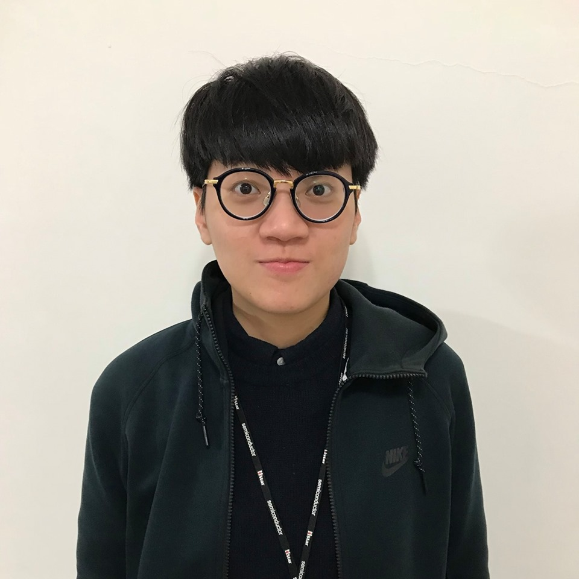

I am a software developer with 3-years software engineering experience. My focus areas are web developement and design including back-end system development with Python Django and Spring Boot, front-end development with JavaScript, and microservices design.

• Pursuing a Master's degree in Computer Science at Rice University.
• A goal-driven software engineer with 3-Years experience in software engineering,
back-end system design, and video codec.
• Skilled at back-end development with Python Django and Java Spring Boot.
• Experienced in designing RESTful APIs and high-concurrency systems.
• Possess clear concepts of web services, client/server architecture, and design patterns.
• A quality-conscious software engineer with the ability to write high-coverage unit tests for assuring high software quality.
Professional Skills:
- Programming: Python, Java, C / C++ , SQL
- Web Development: Django, Spring Boot, RESTful API, Redis, Docker, Kafka, ELK Stack, Jenkins
- Software Engineering: OOP/D, Microservices, JUnit testing, IntelliJ, PyCharm, Linux, Vim, Git
EDUCATION
Master of Computer Science, Rice University
Aug. 2021 - Expected Dec. 2022
Houston, TX
M.S. in Communications Engineering, National Tsing Hua University
Sept. 2013 - July 2016
Hsinchu, Taiwan
- GPA: 3.96/4.3
- Thesis: Implementation of MQTT Protocol for Content Management Servers and Linux-Based Embedded Systems
B.S. in Communication Engineering, National Central University
Sept. 2009 - June 2013
Taoyuan, Taiwan
- CatchUp: a cloud platform for taking meeting minutes
- Academic Excellence Award (for ranking top three in class in semester)
WORK EXPERIENCE
Backend Engineer at JKOPAY Co. Ltd.
July 2020 - June. 2020
Taipei, Taiwan
- Built e-ticketing server-side service and architecture from scratch; the system is capable of launching events, selling tickets, transferring tickets, and verifying entrance tickets.
- Tech stack: Java Spring Boot, MyBatis, MySQL, Docker-Swarm, and ELK stack for log management - Involved in developing and implementing a python-based coupon service capable of handling 2500+ RPS while users collected coupons in JKO global shopping festival events.
- Tech stack: Python Django framework, Redis, Kafka, Redis Queue, and cache - Implemented met business need back-end software components to increase DAU / MAU in marketing service.
- Developed a content management system by Python Django for internal marketing specialists.
- Developed RESTful APIs and designed relational database schema that integrates web clients with server backends.
- Wrote unit tests with high coverage to assure better software quality.
- Participated in design and code reviews, fix bugs, and resolve production issues.
Software Engineer at MStar Semiconductor, MediaTek Group.
Dec. 2016 - Jan. 2019
Taipei, Taiwan
- Won 2 times MStar Short Term Reward, which is a recognition of top 3 outstanding employees in the Research and Development Division each quarter.
- Improved compression rate of motion vector in Google AV1 c-model by 65% through researching and developing data compression algorithm.
- Video encoder (JPEG/H.264/HEVC) FPGA verification: implemented test features in encoder software model by C/C++ for verifying hardware functions, covered all target test items.
- Video decoder (Google AV1) FPGA verification: responsible for hardware AV1 decoder IQ/IT verification, including developing IQ/IT patterns for hardware IP verification using AV1 software model.
- Developed desktop application as GUI tool to decode multi-format coding image and display a variety of YUV formats, designed user-friendly interface.
- Analyzed issues, reported test results, and worked with hardware designer to resolve problems.
Portfolio
JKOPay Shopping Festival
Involved in developing and implementing a python-based coupon service capable of handling 2500+ RPS while users collected coupons in JKO global shopping festival events.
- Tech stack: Python Django framework, Redis, Kafka, Redis Queue, and cache.
JKO Lioneers E-ticketing system
Built e-ticketing server-side service and architecture from scratch; the system is capable of launching events, selling tickets, transferring tickets, and verifying entrance tickets.
- Tech stack: Java Spring Boot, MyBatis, MySQL, Docker-Swarm, and ELK stack for log management.
JKO Coupon Service
Implemented met business need back-end software components to increase DAU / MAU in coupon service.
JKO Coupon Service
Independently developed acontent management system by Python Django to set up coupons, campaigns, and missions for internal marketing specialists.